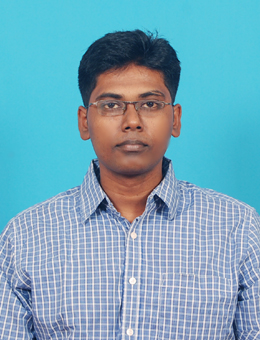

Arvind S Murthy 
Career Objective
Seeking a challenging career in an organisation that enhances my skills and knowledge to
work efficiently for mutual growth.
Education
- First Class Bachelors in Electrical and Electronics Engineering from Anna University in 2009
- First Class High School Leaving Certificate from Holy Infant Jesus Matriculation Higher Secondary School in 2005.
- First Class Secondary School Leaving Certificate from CBSE in 2003.
Work Experience
- June 2017 : Present
- Junior Technical Superintendent at IIT Madras
-
Roles and Responsibilities:
- Operation and Maintenance of Low Temperature Physical Property measurement System.
- Automation of measurement and auxilliary systems.
-
November 2016 : June 2017
- Research Fellowship at CRDE, DRDO
- Roles and Responsibilities:
- Design and Development of a prototype of an Hybrid Electric Tracked Vehicle.
- Finite Element Analysis of an Electric motor suitable for the tracked vehicle.
-
June 2014 : October 2016
-
Technical Executive at Monitoring Technologies
-
Roles and Responsibilities:
- Installation of Machinery Vibration Measurement Equipment.
- Technical Pitch and sales of Noise, vibration and Harshness Measurement Equipment.
Skills and Certifications
- Python Applications with OpenAI
- Artificial Intelligence and Machine Learning with Python
Achievements
- Recommended for a commission in the Indian Army by SSB, Bangalore.
Others